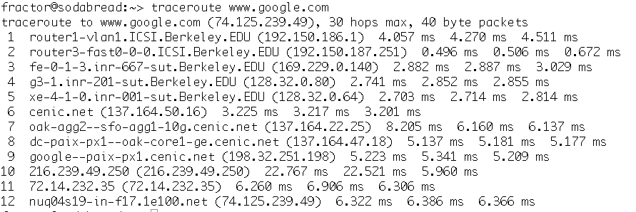
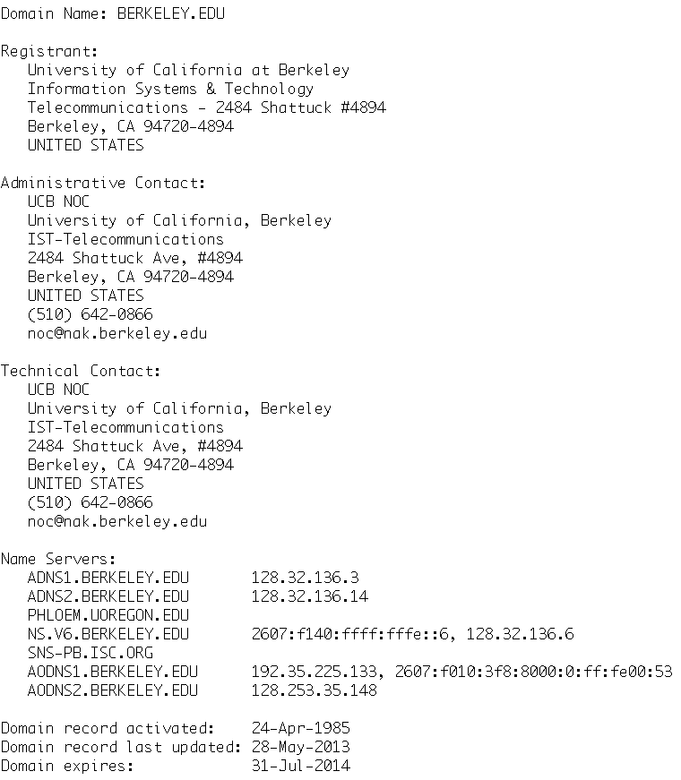

Let's go on to investigate the structure of the Internet.
Traceroute
First, we are going to enumerate the nodes an Internet request takes
when we connect to it. The program available to do that is called traceroute. The
program takes many options but for this lab we only need one: The
target computer. So let's go ahead and try it:

This output tells us that the example request from a sodabread.icsi.berkeley.edu
went through 12 nodes. It also tells us that the actual destination
www.google.com was never
reached. Instead we were redirected to a computer called
nuq04s19-in-f17 in the domain 1e100.net.
This is not unusual, since the service www.google.com with it's billions of users every
day could not be hosted by a single computer. In addition to the
nodes, we also see times in ms. These indicate 3 samples of latency
measurements the tool did to on it's way to the end host.
A note: Sometimes, tracing the route does not succeed completely.
You will see three stars * * *
if that happens. If a route seems to take too long, press CTRL+C
together to abort.
On Linux machines, traceroute often needs to be
invoked as /usr/sbin/traceroute. Under Windows, the
command is tracert. Your TA or lab assistant can help
you with that.
Now, use traceroute to answer the following questions. be sure to
note down your answers either on a sheet of paper or in the Google
Form:
- How long is the routing trace to: www.facebook.com,
www.cnn.com, www.berkeley.edu, www.stanford.edu, www.cas.cn, and
www.berlin.de?
- Pick a traced route from above and compare to your lab
neighbor. Are they different? If so, how?
- Choose a computer (either from above or on your own) that is
some distance away and traceroute it three times. Does the
output differ? [it usually would]
- Pick several hosts in California, in the US (but not in
CA), and overseas and trace the routes.
- Can you say that routes are longer based on geographical
distance?
- What about latency vs geographical distance?
- Does the route follow a geographically-sensible path, i.e.
is every node coming closer to the target in geographical
distance?
- How long was your shortest route ever measured in the above
experiments?
After all this work, on to a fun one. Try this:
/usr/sbin/traceroute 216.81.59.173
Whois
By now, you must have started wondering who all these nodes belong
to. Fortunately, there is a way to find out: The whois program allows
querying the the top-level domain name registrar to find out the
administrator (provider) and the owner of a domain. With the default
options, the program will only work with .com, .net, .edu, and .org
domains. If you are interested, you can use the command man
whois to find out how to query other top-level domains (use
arrow keys to scroll, press q to quit). Note, that the whois program
takes a domain, not a hostname. So whois www.berkeley.edu
will not result in any useful information, the query should be whois
berkeley.edu. A typical output looks like this:

More interestingly, you can use whois on IP addresses. In that case,
whois will query the domain that the IP address belongs to
automatically. For example, try a whois
128.32.136.3. A note: whois output can be quite long. Keep
in mind that you can scroll in a commend line console by using
either the scroll bars, your mouse wheel, or the SHIFT+PGUP and
SHIFT+PGDOWN keys.
Now use whois to answer the following questions:
- Who do the nodes belong to in the above shown www.google.com
traceroute?
- How many legal entities can see your search queries packets
(e.g. we are not asking for nodes but companies or individuals
owning them)?